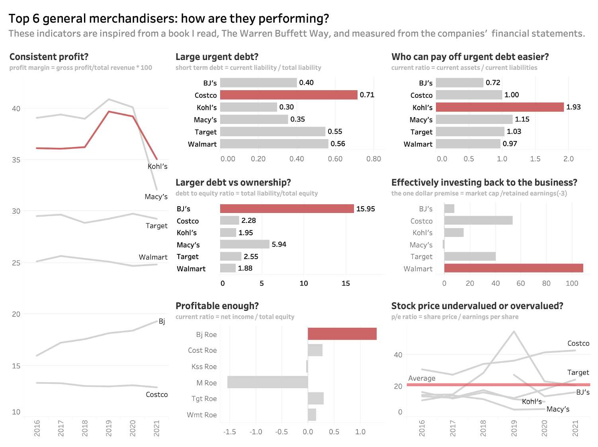

Recently, I have read a couple of books on investment and stock markets which led me
to a conclusion that I need some comprehensive company analysis framework to
compare various companies and make a more informed decision on investment.
The Warren Buffett Way by Robert G. Hagstrom was a great starting point to dig deep
into companies that I was interested in. So I have decided to take over this project
to create a dashboard for some key performance indicators measured from companies'
financial statements. First, I've decided to build the dashboard for Top 6 general merchandisers
in the US ranked by Fortune. And later I can use this dashboard to compare other peer groups
such as Top 6 in information tech or healthcare.

I downloaded each company's balance sheet, income statement, cash flow statement, and company valuations spreadsheets and imported them into jupyter notebook.
I chose 8 indicators to measure companies' profitability, sustainability, indebtedness,
and valuations (I'll explain the rationale later).
1. Profit margin
2. Owner earnings
3. Short-term debt
4. Current ratio
5. Debt-to-equity
6. Return-on-equity
7. The one dollar premise
8. PE ratio
...
...
Things to be cautious about: